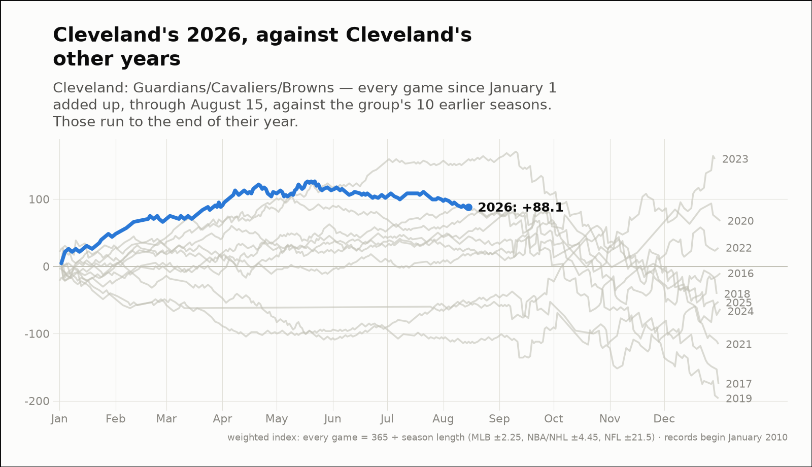
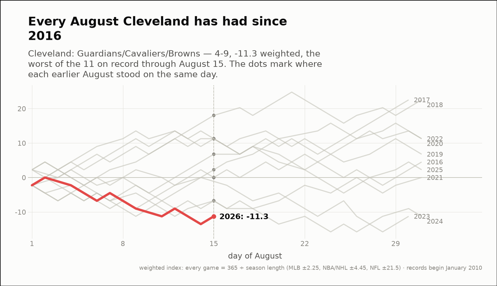
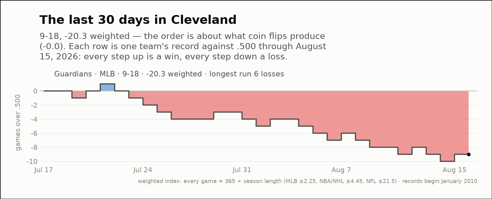

City of the day — Cleveland
Cleveland: Guardians/Cavaliers/Browns
- 2026 so far
- 102-88, +88.1 weighted over 190 games; longest run 7 straight wins
- Order of results
- about as clumped as coin flips (-0.5)
- Earlier seasons (full-year weighted)
- 2016 -10.4, 2017 -174.7, 2018 -41.0, 2019 -196.5, 2020 +67.5, 2021 -115.8, 2022 +27.5, 2023 +159.7, 2024 -63.4, 2025 -52.7
- Last 30 days
- 9-18, -20.3 weighted; longest run 6 straight losses
- Window opens
- July 18, 2026
- August 2026 through day 15
- 4-9, -11.3 weighted — the worst of the 11 on record
- Same August in earlier years (same stretch)
- 2016 +0.0, 2017 +6.8, 2018 +18.0, 2019 +11.3, 2020 +2.2, 2021 -6.8, 2022 +11.3, 2023 -6.8, 2024 +0.0, 2025 +11.3
| Team | Last 30 days | Weighted | Longest run |
|---|---|---|---|
| Guardians | 9-18 | -20.3 | 6 straight losses |


